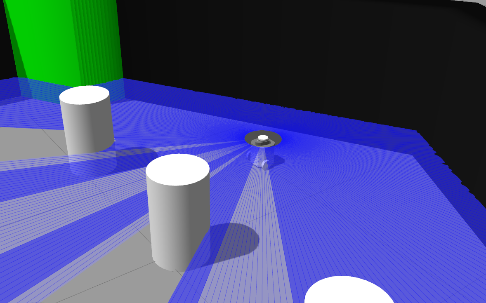
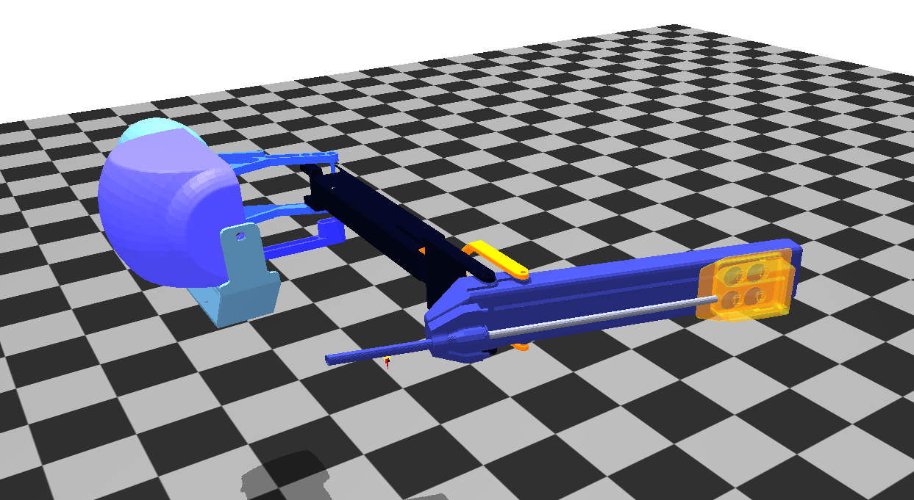
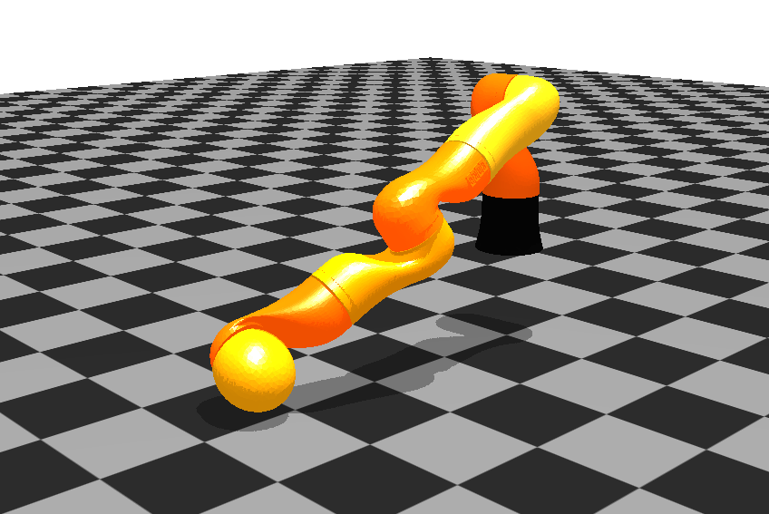
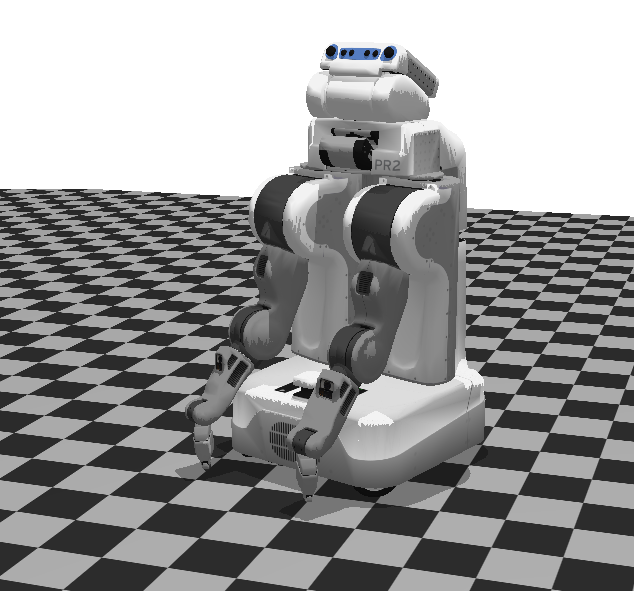

Projects
Challenge levels and grades
Projects can be completed at three Challenge levels. The Challenge level determines the best grade that can be received to the project!
| Challenge level | Best grade |
|---|---|
| Basic | 3 |
| Advanced | 4 |
| Epic | 5 |
Tip
The projects are defined in a way that it is recommended to tart with the Basic level, and then gradually work
towards Epic.
The projects are graded based on the follwoing aspects:
- Proved to be the student's own work
- Running results valid output
- Usage of versioning, usage of GitHub/GitLab/other repository
- Launch files
- Completeness of the solution
- Proper ROS communication
- Proper structure of the program
- Quality of implementation
- Documentation quality
Schedule
| Week | Date | Event |
|---|---|---|
| 8. | April 18 | Project lab I. |
| 13. | May 23 | Project lab II. |
| 14. | May 30 | Project presentations. |
Grading
To pass the course, Tests and the Project must be passed (grade 2). One of the Test can be taken again.
Grade
\(Grade = (Test1 + Test2 + 2 \times Project) / 4\)
---
Project topics
1. TurtleBot3
1.1. TurtleBot obstacle avoidance

- Basic: Simulator animation, SLAM testing. Implement ROS node/nodes to read sensor data and move the robot.
- Advanced: Implement ROS system to detect obstacle and plan and implement obstacle avoidance trajectory in simulated environment using any sensor.
- Epic: Impress me!
1.2. TurtleBot path following

- Basic: Simulator animation, SLAM testing. Implement ROS node/nodes to read sensor data and move the robot.
- Advanced: Implement ROS system for tracking in a simulated environment using any sensor (e.g. passing a wall at a given distance using LIDAR).
- Epic: Impress me!
Image source: https://robots.ros.org/turtlebot3/
1.3. TurtleBot object tracking/visual servoing
- Basic: Simulator animation, SLAM testing. Implement ROS node/nodes to read sensor data and move the robot.
- Advanced: Implement ROS system to find/recognize object and track/move it in simulated environment using any sensor (e.g. visual servoing).
- Epic: Impress me!
1.4. TurtleBot action library
- Basic: Simulator animation, SLAM testing. Implement ROS node/nodes to read sensor data and move the robot.
- Advanced: Implement a ROS action-based library of simple operations and a system to execute them (e.g. push object, move to object, turn around).
- Epic: Impress me!
2. YouBot
2.1. YouBot ROS integration
- Basic: YouBot repo build, getting to know it
- Advanced: Moving a simulated robot in an articulated ROS environment
- Epic: Testing on real robot and/or impress me!
3. AMBF
Building AMBF
Fork AMBF, then clone our fork:
cd ~/ros2_ws/src
git clone <MY_AMBF_FORK.git>
cd ~/ros2_ws
colcon build --symlink-install
cd ~/ros2_ws/src/ambf/bin/lin-x86_64
./ambf_simulator -l 4
3.1. AMBF da Vinci ROS integration

- Basic: Simulator animation, robot control in joint space and task space (IK already implemented in AMBF) from ROS via CRTK topics
- Advanced: Object detection in *Peg transfer puzzle
- Epic: Autonomous manipulation in Peg transfer and/or impress me!
3.2. AMBF KUKA arm ROS integration

- Basic: Simulator animation, robot control in joint space from ROS
- Advanced: Generate trajectories in joint space
- Epic: Implement inverse kinematics and/or impress me!
3.3. AMBF PR2 humanoid ROS integration

- Basic: Simulator animation, robot control in joint space from ROS
- Advanced: Robot control in task space, IK?
- Epic: Trajectory planning/Navigation/Manipulation and/or impress me!
X. Own topic
By discussion.